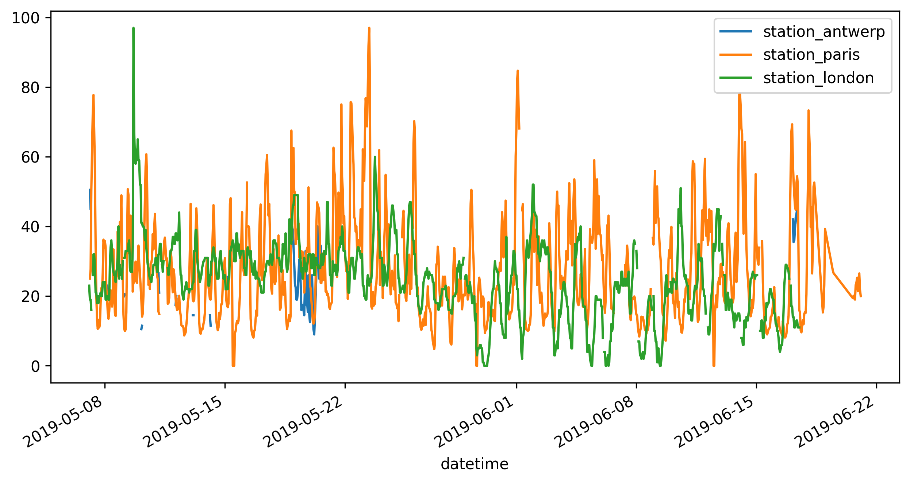
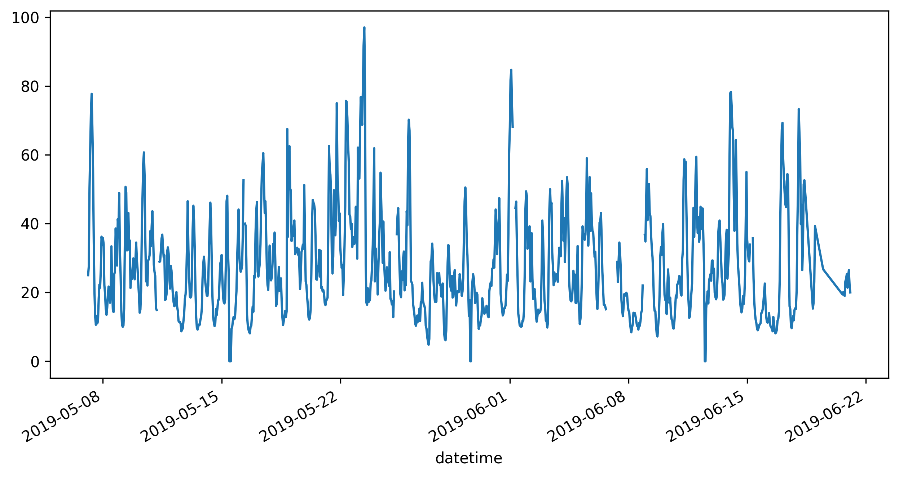
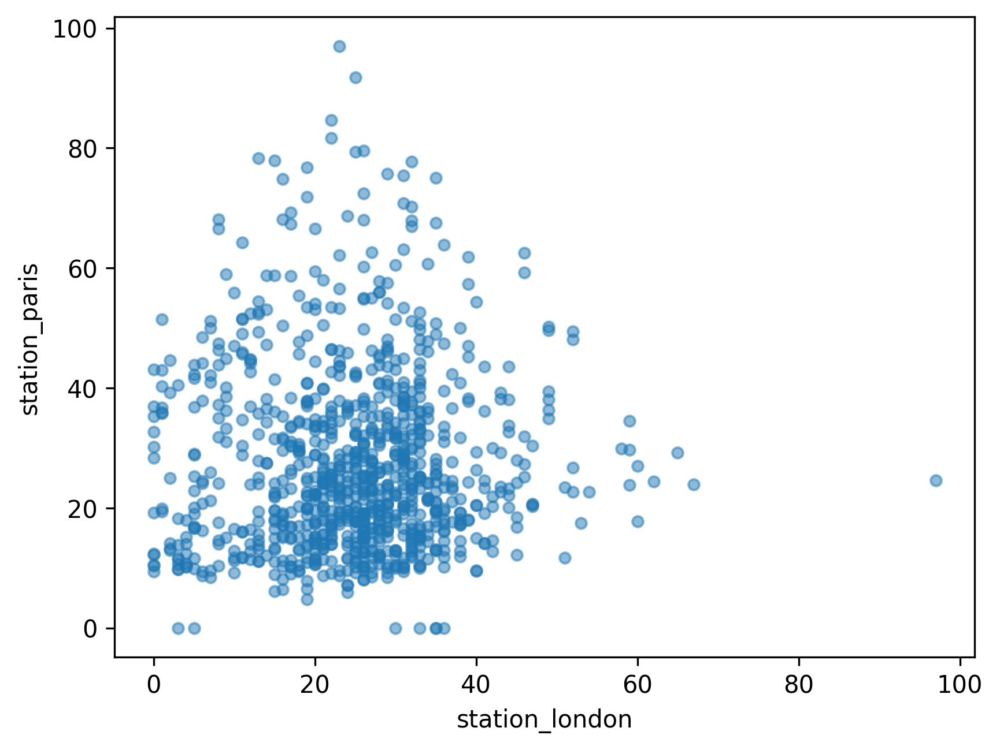
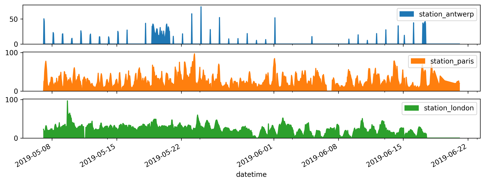

14. Data Analysis with NumPy and Pandas#
14.1. Introduction#
14.2. Learning Objectives#
14.3. Introduction to NumPy#
14.3.1. Creating NumPy Arrays#
import numpy as np
elevation_readings = np.array([245, 312, 156, 423, 678])
print(f"1D Array (elevation readings): {elevation_readings}")
print(f"Data type: {elevation_readings.dtype}")
print(f"Array shape: {elevation_readings.shape}")
1D Array (elevation readings): [245 312 156 423 678]
Data type: int64
Array shape: (5,)
# Each row represents one location: [latitude, longitude]
coordinates = np.array(
[[35.6895, 139.6917], [40.7128, -74.0060], [51.5074, -0.1278]] # Tokyo # New York
) # London
print(f"2D Array (city coordinates):\n{coordinates}")
print(f"Array shape: {coordinates.shape}") # (3 rows, 2 columns)
print(f"Number of cities: {coordinates.shape[0]}")
2D Array (city coordinates):
[[ 3.568950e+01 1.396917e+02]
[ 4.071280e+01 -7.400600e+01]
[ 5.150740e+01 -1.278000e-01]]
Array shape: (3, 2)
Number of cities: 3
# For example, you might create a grid to store calculated distances
distance_matrix = np.zeros((3, 3))
print(f"Distance matrix (initialized with zeros):\n{distance_matrix}")
print(f"This could store distances between {distance_matrix.shape[0]} cities")
Distance matrix (initialized with zeros):
[[0. 0. 0.]
[0. 0. 0.]
[0. 0. 0.]]
This could store distances between 3 cities
# You can multiply by any number to get arrays filled with that value
weights = np.ones((2, 4)) * 0.5 # Array filled with 0.5
print(f"Array of weights (0.5):\n{weights}")
# Or create an array for marking valid data points
valid_data_flags = np.ones((5,), dtype=bool) # All True initially
print(f"Data validity flags: {valid_data_flags}")
Array of weights (0.5):
[[0.5 0.5 0.5 0.5]
[0.5 0.5 0.5 0.5]]
Data validity flags: [ True True True True True]
# For example, creating a series of years for time series analysis
years = np.arange(2010, 2021, 1) # From 2010 to 2020, step by 1
print(f"Years array: {years}")
# Or creating latitude values for a grid
latitudes = np.arange(-90, 91, 30) # From -90 to 90 degrees, every 30 degrees
print(f"Latitude grid: {latitudes}")
# You can also use linspace for evenly spaced values
longitudes = np.linspace(-180, 180, 7) # 7 evenly spaced values from -180 to 180
print(f"Longitude grid: {longitudes}")
Years array: [2010 2011 2012 2013 2014 2015 2016 2017 2018 2019 2020]
Latitude grid: [-90 -60 -30 0 30 60 90]
Longitude grid: [-180. -120. -60. 0. 60. 120. 180.]
14.3.2. Basic Array Operations#
# Element-wise addition - add the same value to every element
# Example: adjusting elevation readings by adding a reference height
elevation_readings = np.array([245, 312, 156, 423, 678])
sea_level_adjustment = elevation_readings + 10 # Add 10 meters to all readings
print(f"Original elevations: {elevation_readings}")
print(f"Adjusted elevations: {sea_level_adjustment}")
Original elevations: [245 312 156 423 678]
Adjusted elevations: [255 322 166 433 688]
# Element-wise multiplication - multiply every element by the same value
# Example: converting elevation from meters to feet (1 meter = 3.28084 feet)
elevations_meters = np.array([245, 312, 156, 423, 678])
elevations_feet = elevations_meters * 3.28084
print(f"Elevations in meters: {elevations_meters}")
print(f"Elevations in feet: {elevations_feet.round(1)}") # Round to 1 decimal place
# You can also add, subtract, and divide arrays by scalars
temperatures_celsius = np.array([15.5, 22.3, 8.9, 31.2])
temperatures_fahrenheit = temperatures_celsius * 9 / 5 + 32
print(f"Temperatures in Celsius: {temperatures_celsius}")
print(f"Temperatures in Fahrenheit: {temperatures_fahrenheit.round(1)}")
Elevations in meters: [245 312 156 423 678]
Elevations in feet: [ 803.8 1023.6 511.8 1387.8 2224.4]
Temperatures in Celsius: [15.5 22.3 8.9 31.2]
Temperatures in Fahrenheit: [59.9 72.1 48. 88.2]
# Operations between arrays - element-wise operations between two arrays
# Example: calculating weighted coordinates
coordinates = np.array(
[[35.6895, 139.6917], [40.7128, -74.0060], [51.5074, -0.1278]] # Tokyo # New York
) # London
# Apply different weights to latitude and longitude (useful for some projections)
weights = np.array([1.0, 0.8]) # Weight latitude normally, reduce longitude weight
weighted_coords = coordinates * weights
print(f"Original coordinates:\n{coordinates}")
print(f"Weighted coordinates:\n{weighted_coords}")
# You can also perform operations between arrays of the same shape
coord_differences = coordinates - coordinates[0] # Distance from first city (Tokyo)
print(f"Coordinate differences from Tokyo:\n{coord_differences}")
Original coordinates:
[[ 3.568950e+01 1.396917e+02]
[ 4.071280e+01 -7.400600e+01]
[ 5.150740e+01 -1.278000e-01]]
Weighted coordinates:
[[ 3.5689500e+01 1.1175336e+02]
[ 4.0712800e+01 -5.9204800e+01]
[ 5.1507400e+01 -1.0224000e-01]]
Coordinate differences from Tokyo:
[[ 0. 0. ]
[ 5.0233 -213.6977]
[ 15.8179 -139.8195]]
14.3.3. Reshaping Arrays#
# Example: Reshape coordinate data received as a flat list
# Imagine you received GPS data as: [lat1, lon1, lat2, lon2, lat3, lon3]
flat_coordinates = np.array([35.6895, 139.6917, 40.7128, -74.0060, 51.5074, -0.1278])
print(f"Flat coordinate data: {flat_coordinates}")
# Reshape into coordinate pairs (3 rows, 2 columns)
coordinate_pairs = flat_coordinates.reshape((3, 2))
print(f"Reshaped into coordinate pairs:\n{coordinate_pairs}")
# Alternatively, you can use -1 to let NumPy calculate one dimension
# This is useful when you know you want pairs but don't know how many
coordinate_pairs_auto = flat_coordinates.reshape(-1, 2)
print(f"Auto-calculated rows: {coordinate_pairs_auto.shape}")
Flat coordinate data: [ 3.568950e+01 1.396917e+02 4.071280e+01 -7.400600e+01 5.150740e+01
-1.278000e-01]
Reshaped into coordinate pairs:
[[ 3.568950e+01 1.396917e+02]
[ 4.071280e+01 -7.400600e+01]
[ 5.150740e+01 -1.278000e-01]]
Auto-calculated rows: (3, 2)
# Understanding array properties
print(f"Original flat array shape: {flat_coordinates.shape}")
print(f"Reshaped array shape: {coordinate_pairs.shape}")
print(
f"Total elements (should be the same): {flat_coordinates.size} vs {coordinate_pairs.size}"
)
# You can also flatten a multidimensional array back to 1D
flattened_again = coordinate_pairs.flatten()
print(f"Flattened back to 1D: {flattened_again}")
Original flat array shape: (6,)
Reshaped array shape: (3, 2)
Total elements (should be the same): 6 vs 6
Flattened back to 1D: [ 3.568950e+01 1.396917e+02 4.071280e+01 -7.400600e+01 5.150740e+01
-1.278000e-01]
14.3.4. Mathematical Functions on Arrays#
# Mathematical functions applied to arrays
distances_squared = np.array([100, 400, 900, 1600, 2500]) # Squared distances in km²
actual_distances = np.sqrt(distances_squared) # Calculate actual distances
print(f"Squared distances: {distances_squared}")
print(f"Actual distances: {actual_distances}")
# Trigonometric functions - essential for coordinate conversions
angles_degrees = np.array([0, 30, 45, 60, 90])
angles_radians = np.radians(angles_degrees) # Convert to radians first
sine_values = np.sin(angles_radians)
cosine_values = np.cos(angles_radians)
print(f"Angles (degrees): {angles_degrees}")
print(f"Sine values: {sine_values.round(3)}")
print(f"Cosine values: {cosine_values.round(3)}")
Squared distances: [ 100 400 900 1600 2500]
Actual distances: [10. 20. 30. 40. 50.]
Angles (degrees): [ 0 30 45 60 90]
Sine values: [0. 0.5 0.707 0.866 1. ]
Cosine values: [1. 0.866 0.707 0.5 0. ]
# Logarithmic and exponential functions
population_data = np.array([100000, 500000, 1000000, 5000000, 10000000])
# Log transformation is often used to normalize highly skewed data like population
log_population = np.log10(population_data) # Base-10 logarithm
print(f"Population data: {population_data}")
print(f"Log10 of population: {log_population.round(2)}")
# Exponential functions
growth_rates = np.array([0.01, 0.02, 0.03, 0.05]) # 1%, 2%, 3%, 5% growth rates
exponential_growth = np.exp(growth_rates) # e^x
print(f"Growth rates: {growth_rates}")
print(f"Exponential factors: {exponential_growth.round(3)}")
Population data: [ 100000 500000 1000000 5000000 10000000]
Log10 of population: [5. 5.7 6. 6.7 7. ]
Growth rates: [0.01 0.02 0.03 0.05]
Exponential factors: [1.01 1.02 1.03 1.051]
14.3.5. Statistical Operations#
elevation_profile = np.array(
[1245, 1367, 1423, 1389, 1456, 1502, 1478, 1398, 1334, 1278]
)
# Basic descriptive statistics
mean_elevation = np.mean(elevation_profile)
median_elevation = np.median(elevation_profile)
std_elevation = np.std(elevation_profile)
min_elevation = np.min(elevation_profile)
max_elevation = np.max(elevation_profile)
print(f"Elevation Profile Statistics:")
print(f"Mean elevation: {mean_elevation:.1f} meters")
print(f"Median elevation: {median_elevation:.1f} meters")
print(f"Standard deviation: {std_elevation:.1f} meters")
print(f"Elevation range: {min_elevation} - {max_elevation} meters")
print(f"Total elevation gain: {max_elevation - min_elevation} meters")
# Percentiles help understand the distribution
percentiles = np.percentile(elevation_profile, [25, 50, 75])
print(f"25th, 50th, 75th percentiles: {percentiles}")
Elevation Profile Statistics:
Mean elevation: 1387.0 meters
Median elevation: 1393.5 meters
Standard deviation: 79.3 meters
Elevation range: 1245 - 1502 meters
Total elevation gain: 257 meters
25th, 50th, 75th percentiles: [1342.25 1393.5 1447.75]
14.3.6. Random Data Generation for Simulation#
# Set a seed for reproducible results (useful for testing)
np.random.seed(42)
# Generate random coordinates within realistic bounds
# Latitudes: -90 to 90 degrees, Longitudes: -180 to 180 degrees
n_points = 5
random_latitudes = np.random.uniform(-90, 90, n_points)
random_longitudes = np.random.uniform(-180, 180, n_points)
print(f"Random coordinates:")
for i in range(n_points):
print(f"Point {i+1}: ({random_latitudes[i]:.4f}, {random_longitudes[i]:.4f})")
Random coordinates:
Point 1: (-22.5828, -123.8420)
Point 2: (81.1286, -159.0899)
Point 3: (41.7589, 131.8234)
Point 4: (17.7585, 36.4014)
Point 5: (-61.9166, 74.9061)
temperature_base = 20 # Base temperature in Celsius
temperature_readings = np.random.normal(
temperature_base, 3, 10
) # Mean=20, std=3, 10 readings
print(f"\nSimulated temperature readings (°C):")
print(temperature_readings.round(1))
# Generate random integers - useful for sampling or indexing
random_indices = np.random.randint(0, 100, 5) # Random integers between 0 and 99
print(f"\nRandom sample indices: {random_indices}")
Simulated temperature readings (°C):
[18.6 21.6 18.6 18.6 20.7 14.3 14.8 18.3 17. 20.9]
Random sample indices: [91 59 79 14 61]
14.3.7. Indexing, Slicing, and Iterating#
14.3.7.1. Indexing in NumPy#
# Create a 1D array of temperatures recorded at different times
temperatures = np.array([15.2, 18.5, 22.1, 19.8, 16.3])
# Accessing the first temperature reading
first_temp = temperatures[0]
print(f"First temperature reading: {first_temp}°C")
# Accessing the last temperature reading (negative indexing)
last_temp = temperatures[-1]
print(f"Last temperature reading: {last_temp}°C")
# Accessing the middle reading
middle_temp = temperatures[2]
print(f"Middle temperature reading: {middle_temp}°C")
# Create a 2D array
arr_2d = np.array([[1, 2, 3], [4, 5, 6], [7, 8, 9]])
arr_2d
# Accessing the element in the first row and second column
element = arr_2d[0, 1]
print(f"Element at row 1, column 2: {element}")
# Accessing the element in the last row and last column
element_last = arr_2d[-1, -1]
print(f"Element at last row, last column: {element_last}")
14.3.7.2. Slicing in NumPy#
# Create a 1D array
arr = np.array([10, 20, 30, 40, 50])
# Slice elements from index 1 to 3 (exclusive)
slice_1d = arr[1:4]
print(f"Slice from index 1 to 3: {slice_1d}")
# Slice all elements from index 2 onwards
slice_2d = arr[2:]
print(f"Slice from index 2 onwards: {slice_2d}")
# Create a 2D array
arr_2d = np.array([[1, 2, 3], [4, 5, 6], [7, 8, 9]])
arr_2d
# Slice the first two rows and all columns
slice_2d = arr_2d[:2, :]
print(f"Sliced 2D array (first two rows):\n{slice_2d}")
# Slice the last two rows and the first two columns
slice_2d_partial = arr_2d[1:, :2]
print(f"Sliced 2D array (last two rows, first two columns):\n{slice_2d_partial}")
14.3.7.3. Boolean Indexing#
# Create a 1D array
arr = np.array([10, 20, 30, 40, 50])
# Boolean condition to select elements greater than 25
condition = arr > 25
print(f"Boolean condition: {condition}")
# Use the condition to filter the array
filtered_arr = arr[condition]
print(f"Filtered array (elements > 25): {filtered_arr}")
14.3.7.4. Iterating Over Arrays#
# Create a 1D array
arr = np.array([10, 20, 30, 40, 50])
# Iterating through the array
for element in arr:
print(f"Element: {element}")
# Create a 2D array
arr_2d = np.array([[1, 2, 3], [4, 5, 6], [7, 8, 9]])
# Iterating through rows of the 2D array
print("Iterating over rows:")
for row in arr_2d:
print(row)
# Iterating through each element of the 2D array
print("\nIterating over each element:")
for row in arr_2d:
for element in row:
print(element, end=" ")
14.3.8. Modifying Array Elements#
# Create a 1D array
arr = np.array([10, 20, 30, 40, 50])
# Modify the element at index 1
arr[1] = 25
print(f"Modified array: {arr}")
# Modify multiple elements using slicing
arr[2:4] = [35, 45]
print(f"Modified array with slicing: {arr}")
14.3.9. Working with Geospatial Coordinates#
# Array of latitudes and longitudes
coords = np.array([[35.6895, 139.6917], [34.0522, -118.2437], [51.5074, -0.1278]])
# Convert degrees to radians
coords_radians = np.radians(coords)
print(f"Coordinates in radians:\n{coords_radians}")
14.4. Introduction to Pandas#
14.4.1. Creating Pandas Series and DataFrames#
import pandas as pd
# Creating a Series - a labeled one-dimensional array
# This could represent a list of city names with automatic indexing
city_series = pd.Series(["Tokyo", "Los Angeles", "London"], name="City")
print(f"Pandas Series (city names):\n{city_series}")
print(f"Series name: {city_series.name}")
print(f"Series index: {city_series.index.tolist()}")
Pandas Series (city names):
0 Tokyo
1 Los Angeles
2 London
Name: City, dtype: object
Series name: City
Series index: [0, 1, 2]
data = {
"City": ["Tokyo", "Los Angeles", "London"],
"Latitude": [35.6895, 34.0522, 51.5074],
"Longitude": [139.6917, -118.2437, -0.1278],
"Country": ["Japan", "USA", "UK"],
}
df = pd.DataFrame(data)
print(f"Pandas DataFrame (city information):\n{df}")
print(f"\nDataFrame shape: {df.shape}") # (rows, columns)
print(f"Column names: {df.columns.tolist()}")
print(f"Data types:\n{df.dtypes}")
Pandas DataFrame (city information):
City Latitude Longitude Country
0 Tokyo 35.6895 139.6917 Japan
1 Los Angeles 34.0522 -118.2437 USA
2 London 51.5074 -0.1278 UK
DataFrame shape: (3, 4)
Column names: ['City', 'Latitude', 'Longitude', 'Country']
Data types:
City object
Latitude float64
Longitude float64
Country object
dtype: object
display(df)
14.4.2. Basic DataFrame Operations#
# Selecting a specific column - returns a Series
latitudes = df["Latitude"]
print(f"Latitudes column (Series):\n{latitudes}")
print(f"Type: {type(latitudes)}")
Latitudes column (Series):
0 35.6895
1 34.0522
2 51.5074
Name: Latitude, dtype: float64
Type: <class 'pandas.core.series.Series'>
# Selecting multiple columns - returns a DataFrame
coordinates = df[["Latitude", "Longitude"]]
print(f"\nCoordinates (DataFrame):\n{coordinates}")
print(f"Type: {type(coordinates)}")
Coordinates (DataFrame):
Latitude Longitude
0 35.6895 139.6917
1 34.0522 -118.2437
2 51.5074 -0.1278
Type: <class 'pandas.core.frame.DataFrame'>
western_cities = df[df["Longitude"] < 0]
print("Cities in Western Hemisphere:")
print(western_cities)
Cities in Western Hemisphere:
City Latitude Longitude Country
1 Los Angeles 34.0522 -118.2437 USA
2 London 51.5074 -0.1278 UK
northern_western = df[(df["Latitude"] > 40) & (df["Longitude"] < 0)]
print(f"\nNorthern Western cities:\n{northern_western}")
# Filter by text values
usa_cities = df[df["Country"] == "USA"]
print(f"\nUSA cities:\n{usa_cities}")
Northern Western cities:
City Latitude Longitude Country
2 London 51.5074 -0.1278 UK
USA cities:
City Latitude Longitude Country
1 Los Angeles 34.0522 -118.2437 USA
df["Lat_Radians"] = np.radians(df["Latitude"])
df["Lon_Radians"] = np.radians(df["Longitude"])
df
| City | Latitude | Longitude | Country | Lat_Radians | Lon_Radians | |
|---|---|---|---|---|---|---|
| 0 | Tokyo | 35.6895 | 139.6917 | Japan | 0.622899 | 2.438080 |
| 1 | Los Angeles | 34.0522 | -118.2437 | USA | 0.594323 | -2.063742 |
| 2 | London | 51.5074 | -0.1278 | UK | 0.898974 | -0.002231 |
df["City_Country"] = df["City"] + ", " + df["Country"]
df
| City | Latitude | Longitude | Country | Lat_Radians | Lon_Radians | City_Country | |
|---|---|---|---|---|---|---|---|
| 0 | Tokyo | 35.6895 | 139.6917 | Japan | 0.622899 | 2.438080 | Tokyo, Japan |
| 1 | Los Angeles | 34.0522 | -118.2437 | USA | 0.594323 | -2.063742 | Los Angeles, USA |
| 2 | London | 51.5074 | -0.1278 | UK | 0.898974 | -0.002231 | London, UK |
14.4.3. Grouping and Aggregation#
data = {
"City": ["Tokyo", "Los Angeles", "London", "Paris", "Chicago"],
"Country": ["Japan", "USA", "UK", "France", "USA"],
"Population": [37400068, 3970000, 9126366, 2140526, 2665000],
}
df = pd.DataFrame(data)
df
| City | Country | Population | |
|---|---|---|---|
| 0 | Tokyo | Japan | 37400068 |
| 1 | Los Angeles | USA | 3970000 |
| 2 | London | UK | 9126366 |
| 3 | Paris | France | 2140526 |
| 4 | Chicago | USA | 2665000 |
df_grouped = df.groupby("Country")["Population"].sum()
print(f"Total Population by Country:\n{df_grouped}")
Total Population by Country:
Country
France 2140526
Japan 37400068
UK 9126366
USA 6635000
Name: Population, dtype: int64
14.4.4. Merging DataFrames#
df1 = pd.DataFrame(
{"City": ["Tokyo", "Los Angeles", "London"], "Country": ["Japan", "USA", "UK"]}
)
df2 = pd.DataFrame(
{
"City": ["Tokyo", "Los Angeles", "London"],
"Population": [37400068, 3970000, 9126366],
}
)
df1
| City | Country | |
|---|---|---|
| 0 | Tokyo | Japan |
| 1 | Los Angeles | USA |
| 2 | London | UK |
df2
| City | Population | |
|---|---|---|
| 0 | Tokyo | 37400068 |
| 1 | Los Angeles | 3970000 |
| 2 | London | 9126366 |
# Merge the two DataFrames on the 'City' column
df_merged = pd.merge(df1, df2, on="City")
df_merged
| City | Country | Population | |
|---|---|---|---|
| 0 | Tokyo | Japan | 37400068 |
| 1 | Los Angeles | USA | 3970000 |
| 2 | London | UK | 9126366 |
14.4.5. Handling Missing Data#
data_with_nan = {
"City": ["Tokyo", "Los Angeles", "London", "Paris"],
"Population": [37400068, 3970000, None, 2140526],
}
df_nan = pd.DataFrame(data_with_nan)
df_nan
| City | Population | |
|---|---|---|
| 0 | Tokyo | 37400068.0 |
| 1 | Los Angeles | 3970000.0 |
| 2 | London | NaN |
| 3 | Paris | 2140526.0 |
df_filled = df_nan.fillna(df_nan["Population"].mean())
df_filled
14.4.6. Reading Geospatial Data from a CSV File#
url = "https://github.com/opengeos/datasets/releases/download/world/world_cities.csv"
df = pd.read_csv(url)
df.head()
| id | name | country | latitude | longitude | population | |
|---|---|---|---|---|---|---|
| 0 | 1 | Bombo | UGA | 0.5833 | 32.5333 | 75000 |
| 1 | 2 | Fort Portal | UGA | 0.6710 | 30.2750 | 42670 |
| 2 | 3 | Potenza | ITA | 40.6420 | 15.7990 | 69060 |
| 3 | 4 | Campobasso | ITA | 41.5630 | 14.6560 | 50762 |
| 4 | 5 | Aosta | ITA | 45.7370 | 7.3150 | 34062 |
np.sum(df["population"])
np.int64(1475534501)
14.4.7. Creating plots with Pandas#
# Load the dataset from an online source
url = "https://raw.githubusercontent.com/pandas-dev/pandas/main/doc/data/air_quality_no2.csv"
air_quality = pd.read_csv(url, index_col=0, parse_dates=True)
# Display the first few rows of the dataset
air_quality.head()
| station_antwerp | station_paris | station_london | |
|---|---|---|---|
| datetime | |||
| 2019-05-07 02:00:00 | NaN | NaN | 23.0 |
| 2019-05-07 03:00:00 | 50.5 | 25.0 | 19.0 |
| 2019-05-07 04:00:00 | 45.0 | 27.7 | 19.0 |
| 2019-05-07 05:00:00 | NaN | 50.4 | 16.0 |
| 2019-05-07 06:00:00 | NaN | 61.9 | NaN |
import matplotlib.pyplot as plt
# Set default DPI for all plots
plt.rcParams["figure.dpi"] = 300
air_quality.plot(figsize=(10, 5))
<Axes: xlabel='datetime'>

air_quality["station_paris"].plot(figsize=(10, 5))
<Axes: xlabel='datetime'>

air_quality.plot.scatter(x="station_london", y="station_paris", alpha=0.5)
<Axes: xlabel='station_london', ylabel='station_paris'>

air_quality.plot.area(figsize=(12, 4), subplots=True)
array([<Axes: xlabel='datetime'>, <Axes: xlabel='datetime'>,
<Axes: xlabel='datetime'>], dtype=object)

14.5. Combining NumPy and Pandas#
# Define the Haversine formula using NumPy
def haversine_np(lat1, lon1, lat2, lon2):
R = 6371.0 # Earth radius in kilometers
dlat = np.radians(lat2 - lat1)
dlon = np.radians(lon2 - lon1)
a = (
np.sin(dlat / 2) ** 2
+ np.cos(np.radians(lat1)) * np.cos(np.radians(lat2)) * np.sin(dlon / 2) ** 2
)
c = 2 * np.arctan2(np.sqrt(a), np.sqrt(1 - a))
distance = R * c
return distance
# Define a function to calculate distances from a city to all other cities
def calculate_average_distance(df):
lat1 = df["Latitude"].values
lon1 = df["Longitude"].values
lat2, lon2 = np.meshgrid(lat1, lon1)
distances = haversine_np(lat1, lon1, lat2, lon2)
avg_distances = np.mean(distances, axis=1)
return avg_distances
# Creating a DataFrame
data = {
"City": ["Tokyo", "Los Angeles", "London"],
"Latitude": [35.6895, 34.0522, 51.5074],
"Longitude": [139.6917, -118.2437, -0.1278],
}
df = pd.DataFrame(data)
# Apply the function to calculate average distances
df["Avg_Distance_km"] = calculate_average_distance(df)
df
14.6. Key Takeaways#
14.7. Further Reading#
14.8. Exercises#
14.8.1. Exercise 1: NumPy Array Operations and Geospatial Coordinates#
import numpy as np
# 1. Create coordinate arrays
cities = [
"Tokyo",
"New York",
"London",
"Paris",
]
coordinates_deg = np.array(
[
[35.6895, 139.6917], # Tokyo
[40.7128, -74.0060], # New York
[51.5074, -0.1278], # London
[48.8566, 2.3522], # Paris
]
)
print(f"1. Original coordinates (degrees):\n{coordinates_deg}")
# 2. Unit conversion: Convert to radians
coordinates_rad = np.radians(coordinates_deg)
print(f"\n2. Coordinates in radians:\n{coordinates_rad}")
# 3. Distance calculations: Calculate coordinate differences between Tokyo and each other city (in radians)
tokyo_coords_rad = coordinates_rad[0]
coordinate_differences_from_tokyo = coordinates_rad - tokyo_coords_rad
print(f"\n3. Coordinate differences from Tokyo (radians):\n{coordinate_differences_from_tokyo}")
# 4. Statistical analysis: Find the mean latitude and longitude
mean_lat_rad = np.mean(coordinates_rad[:, 0])
mean_lon_rad = np.mean(coordinates_rad[:, 1])
mean_coordinates_rad = np.array([mean_lat_rad, mean_lon_rad])
print(f"\n4. Mean latitude (radians): {mean_lat_rad:.4f}")
print(f"Mean longitude (radians): {mean_lon_rad:.4f}")
print(f"Mean coordinates (radians): {mean_coordinates_rad}")
# Helper function for Haversine distance (already present in the notebook context, redefined here for self-containment in this cell)
def haversine_np(lat1, lon1, lat2, lon2):
R = 6371.0 # Earth radius in kilometers
dlat = lat2 - lat1
dlon = lon2 - lon1
a = (
np.sin(dlat / 2) ** 2
+ np.cos(lat1) * np.cos(lat2) * np.sin(dlon / 2) ** 2
)
c = 2 * np.arctan2(np.sqrt(a), np.sqrt(1 - a))
distance = R * c
return distance
# Identify which city is furthest from the mean coordinates
distances_from_mean = []
for i, city_coords_rad in enumerate(coordinates_rad):
lat_city, lon_city = city_coords_rad[0], city_coords_rad[1]
dist = haversine_np(
lat_city, lon_city, mean_coordinates_rad[0], mean_coordinates_rad[1]
)
distances_from_mean.append(dist)
furthest_city_index = np.argmax(distances_from_mean)
furthest_city_name = cities[furthest_city_index]
max_distance = distances_from_mean[furthest_city_index]
print(f"\nDistances from mean coordinates (km): {np.array(distances_from_mean).round(2)}")
print(f"The city furthest from the mean coordinates is {furthest_city_name} with a distance of {max_distance:.2f} km.")
1. Original coordinates (degrees):
[[ 3.568950e+01 1.396917e+02]
[ 4.071280e+01 -7.400600e+01]
[ 5.150740e+01 -1.278000e-01]
[ 4.885660e+01 2.352200e+00]]
2. Coordinates in radians:
[[ 6.22899283e-01 2.43808010e+00]
[ 7.10572408e-01 -1.29164837e+00]
[ 8.98973719e-01 -2.23053078e-03]
[ 8.52708531e-01 4.10536347e-02]]
3. Coordinate differences from Tokyo (radians):
[[ 0. 0. ]
[ 0.08767312 -3.72972847]
[ 0.27607444 -2.44031063]
[ 0.22980925 -2.39702647]]
4. Mean latitude (radians): 0.7713
Mean longitude (radians): 0.2963
Mean coordinates (radians): [0.77128849 0.29631371]
Distances from mean coordinates (km): [9421.04 7066.98 1507.98 1230.67]
The city furthest from the mean coordinates is Tokyo with a distance of 9421.04 km.
14.8.2. Exercise 2: Pandas DataFrame Operations with Geospatial Data#
import pandas as pd
import numpy as np
# 1. Data loading: Load the world cities dataset
url = "https://github.com/opengeos/datasets/releases/download/world/world_cities.csv"
df = pd.read_csv(url)
print("1. Data Loading: World Cities Dataset loaded.")
# 2. Data exploration:
print("\n2. Data Exploration:")
# Display the first 5 rows
print("First 5 rows of the dataset:")
display(df.head())
# Check the shape of the dataset
print(f" Shape of the dataset (rows, columns): {df.shape}")
# Identify any missing values
print("Missing values per column:")
print(df.isnull().sum())
# 3. Data filtering:
print("\n3. Data Filtering:")
# Filter to include only cities with population > 1 million
cities_over_1m = df[df['population'] > 1_000_000]
print("Cities with population > 1 million:")
display(cities_over_1m.head())
print(f"Number of cities with population > 1 million: {len(cities_over_1m)}")
# Create a subset of cities in a specific continent or region of your choice (e.g., 'USA')
usa_cities = df[df['country'] == 'USA']
print("Subset of cities in USA:")
display(usa_cities.head())
print(f"Number of cities in USA: {len(usa_cities)}")
# 4. Data aggregation:
print("\n4. Data Aggregation:")
# Group cities by country and calculate total population per country
population_by_country = df.groupby('country')['population'].sum().sort_values(ascending=False)
print("Total population by country (top 5):")
print(population_by_country.head())
# Find the country with the most cities in the dataset
country_city_counts = df['country'].value_counts()
country_with_most_cities = country_city_counts.idxmax()
max_cities = country_city_counts.max()
print(f"Country with the most cities: {country_with_most_cities} with {max_cities} cities.")
# Calculate average population by continent (if continent data is available)
# The 'world_cities.csv' dataset does not contain a 'continent' column.
print("Skipping average population by continent as 'continent' column is not available in the dataset.")
# 5. Data analysis:
print("\n5. Data Analysis:")
# Sort cities by population and display the top 10 largest cities
top_10_largest_cities = df.sort_values(by='population', ascending=False).head(10)
print("Top 10 largest cities by population:")
display(top_10_largest_cities)
# Find the northernmost and southernmost cities in the dataset
northernmost_city = df.loc[df['latitude'].idxmax()]
southernmost_city = df.loc[df['latitude'].idxmin()]
print(f" Northernmost city: {northernmost_city['name']} ({northernmost_city['latitude']:.2f}° N)")
print(f" Southernmost city: {southernmost_city['name']} ({southernmost_city['latitude']:.2f}° N)")
# Calculate the population density if area data is available
# The 'world_cities.csv' dataset does not contain an 'area' column.
print(" Skipping population density calculation as 'area' column is not available in the dataset.")
1. Data Loading: World Cities Dataset loaded.
2. Data Exploration:
First 5 rows of the dataset:
| id | name | country | latitude | longitude | population | |
|---|---|---|---|---|---|---|
| 0 | 1 | Bombo | UGA | 0.5833 | 32.5333 | 75000 |
| 1 | 2 | Fort Portal | UGA | 0.6710 | 30.2750 | 42670 |
| 2 | 3 | Potenza | ITA | 40.6420 | 15.7990 | 69060 |
| 3 | 4 | Campobasso | ITA | 41.5630 | 14.6560 | 50762 |
| 4 | 5 | Aosta | ITA | 45.7370 | 7.3150 | 34062 |
Shape of the dataset (rows, columns): (1249, 6)
Missing values per column:
id 0
name 0
country 0
latitude 0
longitude 0
population 0
dtype: int64
3. Data Filtering:
Cities with population > 1 million:
| id | name | country | latitude | longitude | population | |
|---|---|---|---|---|---|---|
| 97 | 98 | Turin | ITA | 45.07039 | 7.66996 | 1652000 |
| 103 | 104 | Lille | FRA | 50.64997 | 3.08001 | 1044000 |
| 123 | 124 | San Bernardino | USA | 34.12038 | -117.30003 | 1745000 |
| 124 | 125 | Bridgeport | USA | 41.17998 | -73.19996 | 1018000 |
| 126 | 127 | Manchester | GBR | 53.50042 | -2.24799 | 2230000 |
Number of cities with population > 1 million: 392
Subset of cities in USA:
| id | name | country | latitude | longitude | population | |
|---|---|---|---|---|---|---|
| 114 | 115 | Agana | USA | 13.47002 | 144.75002 | 122411 |
| 123 | 124 | San Bernardino | USA | 34.12038 | -117.30003 | 1745000 |
| 124 | 125 | Bridgeport | USA | 41.17998 | -73.19996 | 1018000 |
| 125 | 126 | Rochester | USA | 43.17043 | -77.61995 | 755000 |
| 159 | 160 | International Falls | USA | 48.60113 | -93.41085 | 15240 |
Number of cities in USA: 114
4. Data Aggregation:
Total population by country (top 5):
country
CHN 217132049
USA 156465416
IND 154810226
BRA 80794236
JPN 65779390
Name: population, dtype: int64
Country with the most cities: USA with 114 cities.
Skipping average population by continent as 'continent' column is not available in the dataset.
5. Data Analysis:
Top 10 largest cities by population:
| id | name | country | latitude | longitude | population | |
|---|---|---|---|---|---|---|
| 1239 | 1240 | Tokyo | JPN | 35.68502 | 139.75141 | 35676000 |
| 1224 | 1225 | New York | USA | 40.74998 | -73.98002 | 19040000 |
| 1230 | 1231 | Mexico City | MEX | 19.44244 | -99.13099 | 19028000 |
| 1240 | 1241 | Mumbai | IND | 19.01699 | 72.85699 | 18978000 |
| 1245 | 1246 | Sao Paulo | BRA | -23.55868 | -46.62502 | 18845000 |
| 1148 | 1149 | Delhi | IND | 28.66999 | 77.23000 | 15926000 |
| 1238 | 1239 | Shanghai | CHN | 31.21645 | 121.43650 | 14987000 |
| 1243 | 1244 | Kolkata | IND | 22.49497 | 88.32468 | 14787000 |
| 1175 | 1176 | Dhaka | BGD | 23.72306 | 90.40858 | 12797394 |
| 1217 | 1218 | Buenos Aires | ARG | -34.60250 | -58.39753 | 12795000 |
Northernmost city: Longyearbyen (78.22° N)
Southernmost city: AmundsenScott South Pole Station (-89.98° N)
Skipping population density calculation as 'area' column is not available in the dataset.